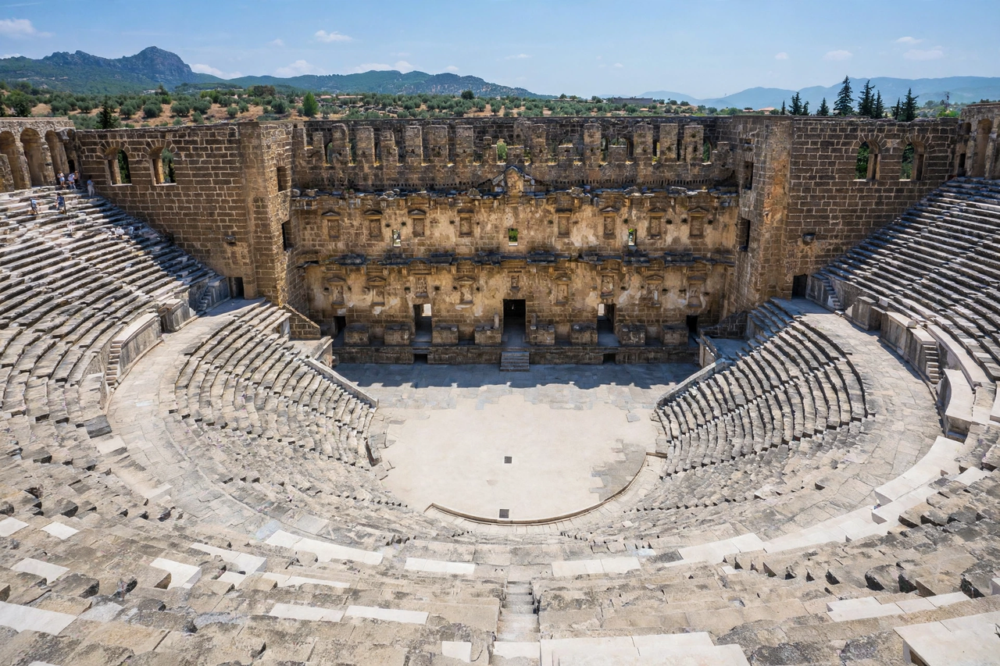

| Pamphylia | |
|---|---|
 The Roman theatre at Aspendos, Pamphylia | |
| Location | Southern Anatolia (modern Antalya Province, Turkey) |
| Major cities | Perge, Side, Aspendos, Attaleia, Sillyon |
| Period | Bronze Age – Byzantine era |
Pamphylia (Ancient Greek: Παμφυλία, "land of all tribes") was a historical region on the southern coast of Anatolia, in modern Turkey, corresponding roughly to the eastern part of Antalya Province. It occupied a fertile coastal plain between the Taurus Mountains and the Mediterranean Sea, bounded by Lycia to the west and Cilicia to the east.
Settled from the Bronze Age, Pamphylia was colonised by Greeks according to tradition after the Trojan War, and its population remained a mixture of indigenous Anatolians and Greek settlers — hence its name. The region passed successively under Lydian, Persian, Macedonian and Hellenistic rule before being incorporated into the Roman Empire, where it was at times joined administratively with Lycia in the province of Lycia et Pamphylia.
The principal cities were Perge, Side, Aspendos, Attaleia (modern Antalya) and Sillyon. Pamphylia is exceptionally rich in classical remains: Aspendos preserves the best-surviving Roman theatre in the world, Perge has long colonnaded streets and a stadium, and Side retains temples, an agora and a vast theatre above its harbour. In the New Testament, Pamphylia appears in the itinerary of Paul the Apostle, who preached at Perge on his first missionary journey.